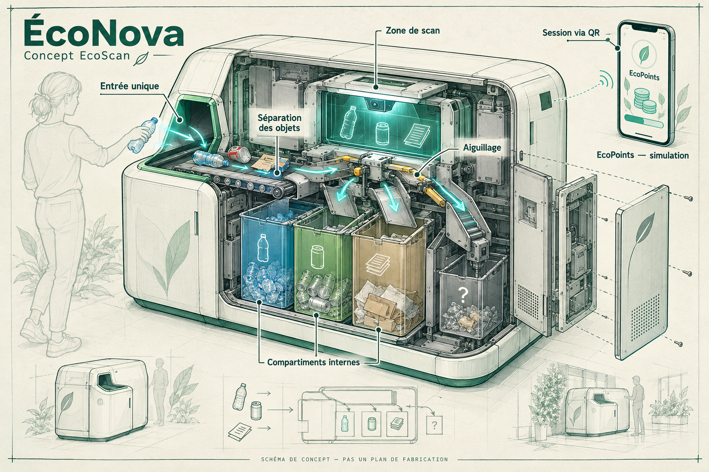

Prévenir
Acheter moins, choisir durable et éviter les emballages inutiles réduit les ressources mobilisées dès le départ.
Smart Recycling for a Sustainable Future
Moins gaspiller. Mieux comprendre. Agir ensemble.
EcoScan imagine un quotidien plus durable, à commencer par le campus.
Chaque objet raconte une histoire : des matières extraites, de l’énergie utilisée, un transport et une fin de vie. Préserver les ressources commence bien avant la poubelle.
Acheter moins, choisir durable et éviter les emballages inutiles réduit les ressources mobilisées dès le départ.
Réemployer, partager et réparer prolonge la vie des objets et limite la demande de nouvelles matières.
Le recyclage permet de récupérer certaines matières. Il dépend de filières adaptées et ne remplace pas la réduction de la consommation.
Des emballages composites et des consignes variables rendent le tri difficile. Un objet mal orienté peut perturber une filière : la signalétique locale reste la référence.
Sans état initial ni observations comparables, on ne sait pas si une campagne améliore les pratiques. Des mesures agrégées pourraient éclairer les progrès.
Des gestes simples, un retour pédagogique et des défis collectifs pourraient aider à ancrer une habitude sans culpabiliser.
À la cafétéria, à la bibliothèque ou entre deux cours, la communauté universitaire partage des lieux et des habitudes. Ces moments quotidiens offrent un terrain concret pour parler de gaspillage alimentaire, d’impressions et d’objets jetables.
EcoScan propose une campagne non lucrative destinée à la communauté de l’UNIL : affiches explicatives, QR codes vers ce site et défis étudiants. Un éventuel pilote demanderait les autorisations du campus et une coordination avec les responsables des déchets.
Projet académique indépendant : aucun partenariat officiel ni déploiement autorisé à l’UNIL n’est revendiqué.
Transformer une hésitation en apprentissage. Voici le parcours envisagé pour une future application ; ce site en propose une simulation pédagogique.
Scanner le QR code de la poubelle depuis l’app ouvrirait une session. À l’intérieur, des capteurs identifieraient les objets déposés. Ici, connexion et identification sont simulées.
Une ouverture commune recevrait les recyclables et un aiguillage interne les dirigerait vers des compartiments séparés. Le mécanisme et la vérification du routage restent à développer et à tester.
Des EcoPoints pourraient encourager la participation. Le concept prévoit un portefeuille lié à la session sur la poubelle. Les points de cette page sont fictifs et ne donnent droit à aucune récompense réelle.
Une IA pourrait reconnaître une catégorie d’objet, mais une image seule ne garantit pas sa composition. Les emballages composites, salissures et erreurs de reconnaissance exigeraient des vérifications et une option « je ne sais pas ».
Une base de consignes tenue à jour serait indispensable. Des capteurs IoT pourraient renseigner le remplissage des bacs ; ils ne prouveraient pas à eux seuls qu’un objet a été correctement trié.
Un pilote devrait privilégier des données agrégées, définir la durée de conservation et informer les participants. Ce site n’utilise ni compte, ni caméra, ni suivi publicitaire, ni transmission de vos réponses.
Emporter une gourde, demander une portion adaptée à son appétit et imprimer seulement lorsque nécessaire.
Choisir un contenant réutilisable, échanger ses livres et emprunter le matériel peu utilisé.
Entretenir son vélo et ses appareils ; rechercher un atelier de réparation avant de remplacer un objet.
Séparer les matières lorsque la filière le demande et suivre les indications affichées sur place.
ÉcoNova est une seule poubelle : vous vous connectez à la station depuis l’app, puis vous déposez vos recyclables dans une ouverture commune. La machine envisagée les identifie et les trie dans des compartiments internes, sans vous demander de choisir un bac.
Compartiments internes séparés — accès réservé à la collecte
UNE SEULE POUBELLE POUR L’UTILISATEUR · LES COMPARTIMENTS SONT À L’INTÉRIEUR

Cette illustration générée montre l’architecture envisagée, pas un équipement fabriqué. Le schéma vectoriel téléchargeable en précise les étapes. La reconnaissance en 5 ms est une cible non démontrée ; elle ne représente pas le temps de séparation, de tri mécanique ou de transfert des points.
Comme lorsqu’on démarre une session sur un vélo partagé, l’utilisateur scannerait le QR code propre à la poubelle avec l’app EcoScan. Une session temporaire relierait les dépôts au bon portefeuille, puis se fermerait pour éviter d’attribuer les déchets du suivant.
Vous utilisez une seule ouverture. Un mécanisme devrait séparer les objets, les présenter aux capteurs puis actionner un aiguillage vers le compartiment adapté. Pour un dépôt mélangé, la séparation des objets est une étape essentielle à prototyper ; un sac entier ne peut pas être supposé analysé instantanément.
Après confirmation du dépôt et du routage, la station enverrait un événement unique au portefeuille de l’app. L’identifiant de cet événement éviterait les doubles crédits. L’utilisation des points demanderait un catalogue et des accords de récompense ; aucun n’existe actuellement.
C’est l’ambition du concept. Il faudrait préciser ce qui est chronométré et mesurer la précision sur des déchets réels. La capture, la séparation d’un mélange, l’analyse, le mouvement mécanique et l’envoi des points ont des durées distinctes. Cette démo ne mesure aucune de ces performances.
Manipulez le niveau du compartiment cible et la connexion pour tester les limites du parcours. Un compartiment plein empêche le dépôt dans cette démo. Aucune mesure ni alerte réelle n’est transmise.
Ce dessin n’est pas un plan de fabrication. Dimensions, accessibilité physique, sécurité, résistance au feu, nettoyage et compatibilité avec les filières doivent être validés avant tout prototype installé.
Dans l’app envisagée, scanner le QR code de la poubelle démarrerait une session identifiée. Un identifiant de station et une confirmation éviteraient de confondre deux machines voisines.
Utiliser l’ouverture commune selon les matières acceptées. Un dépôt de plusieurs objets demanderait un dispositif de séparation et de contrôle du débit ; les liquides, objets dangereux et sacs fermés seraient exclus tant qu’un système adapté n’est pas validé.
Les objets seraient isolés, analysés et aiguillés vers des bacs internes distincts. Une reconnaissance incertaine demanderait un contrôle : la machine ne devrait pas contaminer une filière en devinant.
Après confirmation matérielle, un événement validé créditerait le portefeuille du téléphone. L’utilisateur consulterait son solde, échangerait ses points contre une offre disponible et fermerait sa session. Ces fonctions sont ici simulées.
Prévoir des contrastes lisibles, des mots simples, des pictogrammes et une ouverture commune accessible. Tester avec des personnes ayant des besoins différents ; ne pas s’appuyer uniquement sur la couleur ou sur un écran.
Préférer les niveaux de remplissage agrégés aux profils individuels. Les capteurs envisagés doivent observer les objets dans une zone interne, sans filmer les passants. Le lien avec un portefeuille demanderait une session sécurisée, une finalité claire et une validation de la protection des données.
Étudier des pièces remplaçables, des surfaces nettoyables et des modules réparables. Mesurer les besoins électriques et les coûts avant de choisir des capteurs ; ne pas installer de technologie sans usage concret.
Non. La station présentée ici est un concept visuel, pas un produit fabriqué ni installé sur le campus. Le site permet de tester un parcours pédagogique avant d’envisager un pilote.
Non. Elle part de l’objet que vous sélectionnez et affiche une réponse programmée. Les scénarios difficiles invitent à vérifier la consigne plutôt qu’à deviner.
Non. Ils sont fictifs, conservés seulement dans votre navigateur, et sans valeur financière. Aucun partenaire ni programme de récompense réel n’est annoncé.
Consultez les consignes du point de collecte. Les piles, appareils électroniques, produits chimiques et objets dangereux nécessitent des filières spécifiques ; ne les déposez pas dans l’ouverture de la station imaginée.
Une machine réelle pourrait continuer le tri local si ses capteurs et son mécanisme restent opérationnels, puis synchroniser des événements sécurisés plus tard. Cette stratégie reste à développer. Dans cette démo, le dépôt et la connexion sont suspendus hors ligne pour ne pas prétendre transférer des points.
Commencer par discuter avec les responsables des infrastructures et de la durabilité, confirmer les filières et demander les autorisations. Un test de signalétique et des retours utilisateurs peuvent précéder tout investissement matériel.
Connectez le téléphone de démonstration à ÉcoNova, choisissez un objet pour le scénario, puis déposez-le virtuellement. La machine simule l’analyse et le routage ; les points arrivent automatiquement dans le portefeuille fictif. Le choix d’objet sert seulement à alimenter la démo : l’app réelle envisagée ne demanderait pas de choisir un bac.
Connectez d’abord le téléphone de démonstration.
Cinq questions pour distinguer les bons réflexes des raccourcis. Vos réponses restent sur cette page.
Objectif annoncé dans le PowerPoint, non mesuré ni validé.
Projection de hausse de participation du concept original, sans résultat observé.
Ambition d’extension européenne du concept, sans calendrier de déploiement acquis.
Observer les mêmes points de collecte avant et après un pilote, sur des périodes comparables : part d’objets mal triés parmi les objets observés, nombre de participants volontaires, compréhension des consignes et évolution des déchets jetables. Documenter les limites, les effectifs et les changements de contexte ; publier des résultats agrégés sans identifier les personnes. Ces indicateurs sont une proposition, pas des données réelles.
La technologie n’a de sens que si elle rend le geste plus compréhensible. Notre ambition : relier consommation consciente, responsabilité quotidienne et action collective, en commençant à une échelle où l’on peut apprendre et corriger.
Comprendre les hésitations des étudiants et vérifier les filières locales avec les responsables du campus. Demander les autorisations nécessaires.
Proposer des affiches, QR codes et messages en cafétéria. Inviter des volontaires à tester les contenus et l’accessibilité.
Mener un pilote limité, mesurer avant/après et recueillir les retours. Adapter les consignes et documenter ce qui ne fonctionne pas.
Présenter les enseignements. Une extension ne serait envisagée qu’avec des preuves, des moyens et les accords appropriés.
Choisissez un réflexe concret pour votre prochaine journée sur le campus. Pas d’inscription, pas de promesse de récompense : une invitation à agir.
Retrouver les écogestes ↑La mobilisation remplace ici les appels à l’investissement du concept initial. Aucun financement, contact opérationnel ou partenariat commercial n’est annoncé.
Source principale : présentation EcoScan en neuf slides, année non indiquée, et brief académique transmis pour ce projet. Les contenus ont été adaptés au cadre d’une campagne non lucrative ; les chiffres d’ambition sont conservés et explicitement qualifiés.
Le chiffre « nearly one in three items » du support original n’est pas repris comme fait vérifié, faute de source. Les illustrations d’origine et le logo n’ont pas été fournis : les visuels de ce site sont des créations abstraites, pas le logo original.
Pour vérifier les consignes actuelles, consultez les indications du point de collecte et les ressources officielles : UNIL — durabilité et Office fédéral de l’environnement. Ces liens sont des ressources de consultation, sans partenariat ; aucun chiffre externe n’est utilisé sur ce site.